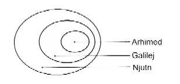

PRVA TUTNJAVA REVOLUCIJE
Kvantna teorija je laka meta za one pisce koji progla¥avaju da je ona ne¥to srodno nekoj religiji ili misticizmu. Klasiènu njutnovsku fiziku èesto prikazuju kao bezbednu, logiènu i usklaðenu sa èovekovom intuicijom. Onda naiðe kvantna teorija koja je kontraintuitivna i avetinjska, i 'zameni' njutnovsku. Te¥ka je za razumevanje. Zvuèi preteæe. Jedno re¥enje - predloženo u nekim od pomenutih knjiga - jeste to da se o kvantnoj fizici razmi¥lja kao o jo¥ jednoj religiji. Za¥to ne smatrati da je ona samo novi oblik hinduizma (ili budizma i tako dalje)? Eto lepog naèina da naprosto napustimo svaku logiku.
Meðutim, može se stvar sagledati i ovako: kvantna teorija je, hm, nauka. A ¥to se tièe onoga da neko nekoga zamenjuje, nemojte nasedati na to. Nauka ne baca na ðubri¥te ideje vekovima stare tek tako, kako se nekome prohte. Naroèito ne one ideje koje su uspe¥no dejstvovale. Vredi ovde napraviti jednu malu digresiju i videti kako se de¥avaju nauène revolucije.
Ne mora nova fizika uvek da potuèe staru. Nauka je sklona da revolucije u sebi samoj izvodi konzervativno i ekonomièno. Možda filozofske posledice mogu da 'obaraju s nogu', da bar prividno napuste staru mudrost koja je govorila kako svet dejstvuje i tako dalje. Ali u konkretnoj stvarnosti nauke dogodi se ovo: stara dogma se pro¥iri na nova podruèja.
Pomislite na jednog antièkog Grka koji se zvao Arhimed. Godine 100. pre roðenja Hrista, taj je nauènik sažeo naèela statike i hidrostatike. Statika je disciplina koja prouèava postojanost sklopova kao ¥to su merdevine, mostovi i graðevinski lukovi - najèe¥æe nekih stvari koje je èovek naèinio da mu život bude udobniji. Arhimed je radio i na hidrostatici koja govori o teènostima i o predmetima koji plove po teènosti, ili potonu, ili plove neko vreme uspravno, pa se onda izvrnu; o naèelima plovnosti, zatim o razlozima zbog kojih bi normalan èovek mogao da poène da vièe "Eureka! Eureka!" kad uðe u kadu punu vode i tako dalje. Te teme su i danas isto onako važne kao i pre dve hiljade leta - ¥tavi¥e, naèin na koji im je Arhimed pristupao dobar je i danas.
Godine 1600, Galileo Galilej uzeo je da preispita zakone statike i hidrostatike. Meðutim, svoja merenja pro¥irio je i na predmete u pokretu - na primer, lopte koje se kotrljaju niz nagnute žlebove, druge lopte koje neko pu¥ta da padaju sa tornja, zatim na strune muzièkog instrumenta leuta, ali optereæene tegovima - a takve su se blago njihale tamo-amo u radionici njegovog oca. Galilejev rad je obuhvatio i ukljuèio u sebe Arhimedova dostignuæa, ali je objasnio i mnogo vi¥e. Èak do obja¥njenja za pojedine odlike povr¥ine Meseca, i èak do Jupiterovih prirodnih satelita dosegnuo je Galilejev rad. Nije Galilej pobedio i sru¥io Arhimeda. Obuhvatio ga je. Ako bismo hteli slikom da prikažemo ¥ta se tu desilo, slika bi izgledala ovako:

Njutn je doma¥io mnogo dalje nego Galilej. Dodajuæi uzroènost, uspeo je da ispita na¥ planetni sistem, kao i dnevne plime i oseke. Njutnova sinteza ukljuèila je nova merenja kretanja planeta i njihovih 'meseca' (prirodnih satelita). Ni¥ta u Njutnovoj revoluciji nije bacilo ljagu na dostignuæa Galileja, a ni Arhimeda, ali je ta revolucija pro¥irila ono podruèje Vaseljene koje je dostupno na¥oj velikoj sintezi.

U osamnaestom i devetnaestom veku, nauènici su poèeli da prouèavaju jednu pojavu koja izlazi iz okvira svakida¥njeg ljudskog iskustva. Ona je dobila naziv elektricitet. Da bismo mogli da prouèavamo elektricitet, morali smo prvo da ga sami proizvodimo, osim u jednom sluèaju, a to je kad sevne munja - nesumnjivo zastra¥ujuæa pojava. (Isto tako moramo danas da prvo proizvedemo neke èestice u na¥im akceleratorima, a tek onda da ih prouèavamo.) Elektricitet je tad bio jednako egzotièan kao kvarkovi danas. Elektrièna struja, napon, jaèina, razna elektrièna i magnetna polja, postepeno su shvatani. Èak i stavljani pod kontrolu. Zakone elektriciteta i magnetizma pro¥irio je i kodifikovao Džejms Maksvel. Ali su Maksvel, pa Hajnrih Herc, pa Guljelmo Markoni, pa Èarls ¥tajnmec (Charles Steinmetz) i mnogi drugi uvodili te zamisli i u praktiènu primenu, pa se ljudska životna okolina menjala. Nas, danas, elektricitet okružuje sa svih strana, komunikacije pucketaju u ovom vazduhu koji udi¥emo. Pa ipak, Maksvel je sa besprekornim po¥tovanjem gledao na sve svoje prethodnike.

Posle Njutna i Maksvela nije imalo vi¥e ¥ta da se traži u nekim prostorima 'izvan'. Da li æe biti ba¥ tako? Ajn¥tajn je usredsredio svoju pažnju na sam rub njutnovskog kosmosa. Njegove konceptualne zamisli oti¥le su veoma duboko; pojedini vidovi Galilejevih i Njutnovih verovanja uznemiravali su Ajn¥tajna i konaèno ga naterali da smisli odvažne nove premise. Podruèje njegovih posmatranja sada je obuhvatilo i neke stvari koje se kreæu veoma brzo. Takve pojave nisu bile od znaèaja posmatraèima pre godine 1900. Meðutim, po¥to su posle 1900. ljudi poèeli da razgledaju atome, da prave nuklearne naprave i da zaviriju u najranija de¥avanja pri postanku kosmosa, Ajn¥tajnova razmatranja stekla su veæi znaèaj.

Ajn¥tajnova teorija gravitacije takoðe je oti¥la dalje od Njutnove, ukljuèila je i dinamiku Vaseljene (jer Njutn je verovao u statiènu Vaseljenu) kao i ¥irenje Vaseljene iz jednog prvobitnog kataklizmiènog dogaðaja. Pa ipak, kad primenimo Ajn¥tajnove jednaèine na Njutnov svet, one daju njutnovske rezultate.
Znaèi, time je cela frka okonèana, zar ne? Ne! Tek je trebalo da zavirimo u unutra¥njost atoma, a za to su nam bili neophodne zamisli koje æe otiæi mnogo, mnogo dalje nego Njutn, zamisli neprihvatljive èak i samome Ajn¥tajnu. Sada smo morali da pro¥irimo svoj svet nadole, u dubinu atoma, u jezgro atoma; taj put jo¥ nije preðen do kraja, izgleda da ima da se ide i dalje. (To jest, jo¥ dublje unutra.) Pa ipak, ni¥ta u kvantnoj revoluciji nije nas navelo da prodamo Arhimeda neprijatelju, izdamo Galileja, opusto¥imo Njutna, obaspemo Ajn¥tajnovu relativnost blatom. Ne, nego smo u¥li u jedan novi, drugaèiji svet, pun sasvim novih pojava. Ustanovili smo da je Njutnova nauka tamo neprikladna; proticalo je vreme i jednog dana stiglo se do nove sinteze.

Pamtite ¥ta smo ono rekli u petom poglavlju - da je ¥redingerova jednaèina stvorena da bi se ovladalo elektronima i drugim èesticama, ali da, primenjena na loptice za bezbol i druge velike predmete, ona poène pred na¥im oèima da se menja, menja i najzad se pretvori u F = ma? (Ili, bar, u ne¥to sasvim blisko i slièno tome.) Dirakova jednaèina, ona koja je predskazala antimateriju, bila je 'elegantno proèi¥æenje' ¥redingerove, smi¥ljeno da se uhvate 'brzi' elektroni, oni koji lete nekom brzinom koja je znaèajan deo brzine svetlosti. Pa ipak, kad Dirakovu jednaèinu primenimo na spore elektrone, ona poène da se menja... i gle ¥ta zuri u nas, ¥redingerova jednaèina. Dodu¥e, magièno pro¥irena, jer u njoj sada postoji i spin elektrona. Jesmo li sad izgazili Njutna? Nismo. Ni¥ta ni slièno tome.
Možda ovaj mar¥ napretka zvuèi kao da je predivno delotvoran. Zato treba da napomenemo da u nauènom radu nastaju i ogromne kolièine ¥karta i rasipanja. Kad god, ovako radoznali i dovitljivi (i obilato finansirani iz budžeta ove na¥e savezne vlade), otvorimo za posmatranje neku novu oblast, iz na¥eg roga izobilja poteku bujice novih zamisli, teorija i sugestija, uglavnom pogre¥nih. Vodi se borba za kontrolu najdalje dohvatljive granice znanja; pobednik bude, meðu zamislima, obièno samo jedna. Sve ostale su gubitnici. One potonu u tamu. One ostaju samo fusnote u istoriji nauke.
Kako se dogodi revolucija? Tokom svakog razdoblja intelektualne smirenosti, kao ¥to je bilo ono doba pod kraj devetnaestog veka, postoji i jedan skup pojava koje 'jo¥ nisu obja¥njene'. Eksperimentatori se nadaju da æe opaziti ne¥to pomoæu èega može biti ubijena vladajuæa teorija, pa da nova, bolja teorija zauzme njeno mesto, a novi ljudi steknu glavnu slavu. Ali to obièno ne uspeva; pokaže se da su merenja bila netaèna, ili da se novi taèni podaci mogu, ipak, objasniti domi¥ljatom primenom stare teorije. Ipak, ponekad uspe. Uvek postoje tri moguænosti: (1) pogre¥ni podaci; (2) stara teorija se žilavo brani i (3) potrebna je nova. Opiti èine da je nauka jedan vrlo živahan zanat.
A kad se revolucija u nauci dogodi, ona ne samo ¥to pro¥iri dohvat nauène misli nego, pokatkad, bitno utièe i na na¥ ukupan pogled na svet. Primer: Njutn ne samo ¥to je dao op¥ti zakon gravitacije on je uveo i deterministièku filozofiju koja je prinudila teologe da Bogu dodele sasvim novu ulogu. Njutnovske matematièke jednaèine pokazale su da možemo odrediti buduænost svakog sistema ako znamo poèetne uslove. Suprotno od toga delovala je, èim je stupila na pozornicu, kvantna fizika, ona koja je primenljiva u svetu atoma; ublažila je determinizam. Dala je pojedinaènim atomskim dogaðajima zadovoljstvo neodreðenosti. Kretanja u nauci najnovijeg doba pokazuju da je èak i u svetu velikih predmeta Njutnov determinizam, zapravo, suvi¥e idealistièki prikaz onog ¥to se stvarno zbiva. Mnoge pojave u makrosvetu saèinjene su od ogromnog broja malih sastavnih delova, na takav naèin uklopljenih u sistem da i najneznatnija promena u poèetnim uslovima može izazvati ogroman preokret u konaènom ishodu. ¥ta æete jednostavniji sistem nego kad voda teèe niz brdo, ili kad se dva klatna nji¥u jedno pokraj drugog; pa ipak, i tu se pokaže 'haotièno pona¥anje'. Sada postoji nauka o haosu, takozvana nelinearna dinamika, koja nam pokazuje da stvarni svet nije ni približno onoliko deterministièki koliko se ranije mislilo.
To, meðutim, nikako ne znaèi da su nauke i razni istoènjaèki misticizmi najednom otkrili da imaju mnogo zajednièkog. Nemaju. Ali ipak, ako vama lièno neke verske metafore (date u knjigama autora koji porede novu fiziku sa istoènjaèkim misticizmom) pomažu da se snaðete u modernim revolucijama u fizici - koristite ih, za¥to ne. Metafore, ipak, ostaju samo metafore. To su vrlo grube mape. Pozajmiæemo jednu staru izreku: ne gubi nikad iz vida koliko se razlikuju mapa i stvarni teren. Fizika nije religija. Eh, kad bi bila, koliko bismo lak¥e pribavili pare.
|